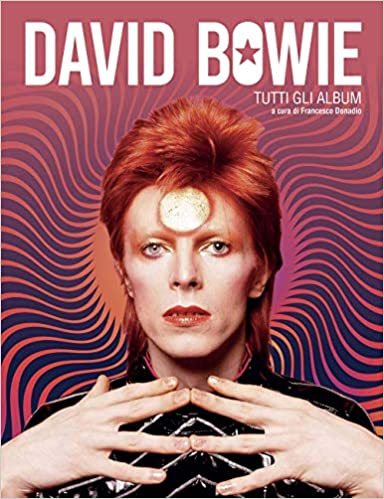

David Bowie (IPA: /ˈdeɪ.vɪd ˈboʊ.i/)[4], pseudonimo di David Robert Jones (Londra, 8 gennaio 1947 – New York, 10 gennaio 2016[5]), è stato un cantautore, polistrumentista e attore britannico.
La passione per la musica portò Bowie a imparare a suonare il sassofono quando era ancora giovanissimo.[6] Dopo aver partecipato alla formazione di varie band, raggiunse il successo da solista nei primi anni settanta, attraversando cinque decenni di musica rock e conquistandosi la fama di aver perfezionato il genere glam rock.[7] Significative e proficue sono state le collaborazioni con Tony Visconti e Brian Eno,[8] reduci dal glam rock dei primi settanta, con i quali instaurò una solida e profonda amicizia che durò svariati anni.[9][10]
Pur non essendo le sue attività principali, Bowie si dedicò anche alla pittura e al cinema, lavorando come attore con registi come Martin Scorsese, David Lynch e Christopher Nolan. Tra i vari film in cui recitò, vi sono L'uomo che cadde sulla Terra, Furyo, Miriam si sveglia a mezzanotte, Absolute Beginners, Labyrinth, Basquiat, The Prestige e Il mio West.
Con circa 140 milioni di album venduti in vita, David Bowie figura tra gli artisti con il maggior numero di vendite[11] e nel 2007 fu indicato dalla rivista Forbes come il quarto cantante più ricco al mondo.[12] Ampiamente considerato uno degli artisti musicali più influenti del XX secolo,[13] nel 2008 fu inserito al 23º posto nella lista dei cento migliori cantanti secondo Rolling Stone, che ha individuato tra i suoi migliori brani Life on Mars?, Space Oddity, Fame e "Heroes".[14] Inoltre cinque dei suoi album sono inseriti nella lista dei 500 migliori album secondo Rolling Stone.[15] Nel 2019 Bowie è stato nominato «il più grande intrattenitore del ventesimo secolo» tramite un sondaggio condotto da BBC Two.[16]
David Robert Jones nacque a Brixton, sobborgo sud di Londra, l'8 gennaio 1947. La madre, Margaret Mary Burns, detta "Peggy", era cassiera presso un cinema, mentre il padre, Haywood Stenton Jones, era un ex militare da poco ritornato dal fronte che in seguito diventò direttore del carcere di Bromley.[17] All'età di sei anni si trasferì con la famiglia dalla casa natale di Stansfield Road 42 in una nuova abitazione a Bromley, altro sobborgo a sud di Londra,[18] dove cominciò da subito a mostrare interesse per la musica che giungeva dagli Stati Uniti: «Quando ero molto piccolo vidi mia cugina ballare Hound Dog di Elvis», raccontò in seguito, «e non l'avevo mai vista alzarsi e dimenarsi a quel modo per nessun'altra canzone. Il potere di quella musica mi colpì moltissimo».[18] David iniziò sin dall'età scolastica ad ascoltare dischi di Fats Domino e Little Richard e a coltivare un crescente interesse per il rhythm and blues, lo skiffle e il rock 'n' roll, oltre che per altre forme d'arte. Quando un insegnante gli chiese cosa volesse fare da grande, rispose di voler diventare l'Elvis britannico.[19] Il Cane Hill Hospital di Croydon, residenza forzata del fratellastro Terry per 15 anni. Nel 1970 verrà evocato nel brano All the Madmen Un ruolo fondamentale nella sua formazione musicale lo svolse il fratellastro Terry Burns, nato nel 1937 da una precedente relazione della madre. «Terry è stato l'inizio di tutto per me», raccontò David anni dopo, «leggeva un sacco di scrittori beat e ascoltava jazzisti come John Coltrane e Eric Dolphy... mentre io frequentavo ancora la scuola, lui ogni sabato sera andava in centro a sentire il jazz in diversi locali... si faceva crescere i capelli e, a suo modo, era un ribelle... tutto questo ebbe una grande influenza su di me».[18] Affetto da schizofrenia paranoide[20] e confinato nel reparto psichiatrico del Cane Hill Hospital di Londra dagli anni settanta al 1985, anno in cui si tolse la vita gettandosi sotto un treno,[21] Terry avrebbe ispirato il cantante in diverse circostanze come dimostrano l'album The Man Who Sold the World del 1970 o brani come The Bewlay Brothers del 1971 e Jump They Say del 1993.[22][23][24] Nel 1958 David iniziò a cantare come corista nella chiesa di St. Mary, insieme agli amici George Underwood e Geoffrey MacCormack,[18] e l'anno successivo ricevette in regalo dalla madre il primo sassofono. Consigliato da Terry cominciò a prendere lezioni dal sassofonista jazz Ronnie Ross:[25] «Per me il sassofono rappresentava la Beat Generation della West Coast, quel periodo della cultura statunitense mi affascinava molto. Quello strumento divenne per me un emblema, un simbolo di libertà».[25] Nel corso della carriera avrebbe imparato a suonare molti strumenti, dimostrando più estro alla chitarra ritmica rispetto a quella solista.[senza fonte] Un'altra esperienza formativa nell'educazione musicale di David fu il breve impiego nel negozio di dischi di Bromley, durante il quale restò affascinato dalla musica di James Brown, Ray Charles e Jackie Wilson, all'epoca ancora poco conosciuti in Europa.[25] Nel 1960 entrò in un gruppo di studenti della Bromley Technical High School interessati all'arte e le sue doti creative furono incoraggiate dall'insegnante progressista Owen Frampton, padre del chitarrista Peter Frampton con il quale avrebbe collaborato in seguito.[25] Due anni dopo si presentò la possibilità di entrare con George Underwood in uno dei gruppi musicali della scuola e l'avventura
«Io volevo vedere e capire quello che capitava. La mia paura era di passare di fianco a una nuova moda che stava per arrivare. Non desideravo altro che locali. Ci andavo sia per l'esperienza sia per riempirmi le orecchie. Per il volume alto, per ascoltare Georgie Fame, per scoprire il jazz.»
A metà del 1962 David e Underwood si unirono ad alcuni studenti che avevano formato un gruppo chiamato The Kon-rads,[25][26] che era stato fondato da Neville Wills e Dave Crook, allievi della Bromley Technical High School, all'inizio del 1962; Underwood si offrì di cantare per loro e, a giugno portò con sé David per cantare A Picture of You di Joe Brown e dare una mano con la voce per una cover di Hey! Baby di Bruce Channel.[26] David cominciò ad utilizzare il suo sax tenore e i Kon-rads ebbero un rilancio. Il primo concerto documentato si tenne il 16 giugno a una festa della scuola.[26] «I Kon-rads facevano cover di tutte le canzoni entrate in classifica», raccontò David trent'anni dopo. «Eravamo una delle migliori cover band della zona e lavoravamo un sacco».[27]
Firma di David Bowie
Alla fine dell'anno Underwood lasciò la band e fu sostituito da un nuovo cantante, Roger Ferris, mentre David Crook fu sostituito alla batteria da Dave Hadfield. I ranghi del gruppo furono accresciuti dall'arrivo di Rocky Shahan al basso, del chitarrista Alan Dodds e delle coriste Christine e Stella Patton.[26] «All'inizio entrai come sassofonista», disse David, «ma poi il nostro cantante Roger Ferris venne picchiato da alcuni greaser al Civic di Orpington e allora mi misi a cantare io».[25][27] I Kon-rads suonavano nelle associazioni giovanili, nelle sale parrocchiali e avevano anche un'uniforme di velluto a coste marrone. David cominciò a sperimentare con il suo atteggiamento sul palco e ad introdurre nuove idee per rendere la band più "attraente", cambiò il nome in Dave Jay, ispirato dal gruppo beat Peter Jay and the Jaywalkers, e cominciò anche a comporre brani suoi, alcuni dei quali furono aggiunti al repertorio del gruppo che comprendeva canzoni come In the Mood, China Doll e Sweet Little Sixteen.[26][28][29][30] Fu in questo periodo che Underwood, durante un litigio a scuola a causa di una ragazza di nome Carol Goldsmith,[31] lo colpì con un pugno nell'occhio sinistro e con l'anello che portava al dito gli causò una midriasi traumatica cronica.[30] Il risultato fu la dilatazione permanente della pupilla, che avrebbe caratterizzato per sempre il suo sguardo e che lo avrebbe lasciato con una percezione alterata della profondità e della luce[32][N 1][33][34] («quando guido non vedo le auto che vengono verso di me, le vedo solo diventare più grosse», dirà nel 1999).[27] Il risultato più evidente di quel pugno fu che la pupilla dell'occhio sinistro rimase perennemente dilatata. Al contrario di quanto si crede comunemente, l'iride non cambiò colore, anche se a causa della pupilla paralizzata si può avere l'impressione che l'occhio sinistro sia verdastro, mentre quello destro è rimasto azzurro.

Nell'agosto 1963 il manager della Decca Records Eric Easton invitò i Kon-rads per un'audizione dopo averli visti in concerto a Orpington. Il 30 agosto, negli studi Decca di West Hampstead il gruppo decise di eseguire I Never Dreamed, un brano che David aveva scritto basandosi sulla notizia di un incidente aereo.[27][35] Oltre ad aver scritto il testo della canzone, il sedicenne David appare come voce d'accompagnamento e suona il sassofono in quella che viene considerata la sua prima registrazione in studio di cui si abbia notizia.[36] In ogni caso l'audizione non ebbe buon esito e contribuì alla sua uscita dai Kon-rads.[35][37] Nel giro di poco tempo i Kon-rads divennero troppo limitanti per David: «Volevo passare al rhythm and blues», raccontò più tardi, «ma loro non erano d'accordo. Volevano limitarsi alla Top 20. Così me ne andai».[27]
Lasciata la Bromley Technical High School, David iniziò a lavorare come apprendista illustratore per l'agenzia pubblicitaria americana J. Walter Thompson. «Ero un junior visualizer», racconterà nel 1993, «era una qualifica importante ma in realtà facevo solo dei collage. E non ho mai avuto l'occasione di dimostrare quanto valevo veramente perché l'agenzia pullulava di talenti». Un lato positivo di quel lavoro fu l'incontro con Ian, un collega appassionato di John Lee Hooker: «In un negozio di Soho trovai l'album di John Lee Hooker e uno di Bob Dylan. Acquistai due copie di entrambi e, dato che Ian mi aveva fatto scoprire John, gli regalai l'album di Dylan. Scoprii questi due artisti in un giorno solo. Fu qualcosa di magico... » L'influenza della musica del bluesman statunitense è evidenziata dal nome del trio che David avrebbe formato dopo i Kon-rads con George Underwood a chitarra e armonica e con il batterista Viv Andrews, The Hooker Brothers (anche se in alcune occasioni si facevano chiamare con altri nomi come The Bow Street Runners e Dave's Reds & Blues).[38] La band eseguiva cover e si guadagnò alcune serate al Bromel Club di Peter Melkin e al Ravensbourne College of Art, ma ebbe vita breve e dopo alcuni concerti Andrews se ne andò. David e Underwood gettarono così le basi per il trio con il quale avrebbero inciso il primo disco, i King Bees,[38][39] un 45 giri intitolato Liza Jane.[40] Il nome del gruppo era stato ispirato da un brano del bluesman Slim Harpo, I'm a King Bee. Gli altri componenti, oltre a David e Underwood, erano Roger Bluck, Dave "Frank" Howard e Bob Allen, rispettivamente chitarra, basso e batteria. «Non mi ricordo nemmeno come si chiamavano» confesserà nel 1993, «erano della zona nord di Londra ed erano quasi dei professionisti. Piuttosto spaventoso».[41] Tuttavia lui e Underwood, come ha confidato quest'ultimo, assunsero presto il controllo della band: «Imponemmo i nostri gusti agli altri».[41]
Nella primavera del 1964 David entrò in contatto con il manager Leslie Conn, che procurò ai King Bees un'audizione con la Decca e la possibilità di registrare il singolo, nonché una serata al Marquee Club e la partecipazione ai programmi televisivi della BBC Juke Box Jury e The Beat Room.[41][42][43] Inizialmente Conn procurò ai King Bees un concerto alla festa dell'anniversario di matrimonio di Bloom a Soho.[44] «Fu tutto piuttosto imbarazzante» raccontò David anni dopo. Ebbero il tempo di suonare Got My Mojo Working e Hoochie Coochie Man prima che Bloom urlasse: "Fateli scendere! Mi stanno rovinando la festa!".[41] L’audizione con la Decca si rivelò più soddisfacente e poco tempo dopo permise loro di registrare finalmente Liza Jane. Così, il 5 giugno 1964 uscì il primo 45 giri ufficiale di Bowie, anche se accreditato a Davie Jones with the King Bees, e il cantante abbandonò il suo lavoro all'agenzia pubblicitaria.[41] Per promuovere il singolo, Conn procurò alla band una serie di apparizioni in svariati locali londinesi. David ebbe l’occasione di fare la sua prima apparizione al Marquee Club, e nei programmi programmi della BBC Juke Box Jury (6 giugno) e The Beat Room (27 giugno).[41][45] Tuttavia, lo scarso successo di Liza Jane, che vendette pochissime delle 3500 copie stampate, decretò la fine della sua militanza nel gruppo.[46][47]
Ad agosto si unì ai Manish Boys, già attivi da quattro anni e considerati all'avanguardia nel cosiddetto Medway beat,[42] e alla fine dell'anno concesse la sua prima intervista televisiva: accompagnato da una fluente chioma bionda, nel tentativo di farsi pubblicità sostenne di aver fondato un'associazione chiamata "Lega Internazionale per la Salvaguardia del Crine Animale".[48] Già attivi da quattro anni, Johnny Flux, Paul Rodriguez, Woolf Byrne, Johnny Watson, Mick White e Bob Solly non furono proprio entusiasti dell'arrivo di David, come ha affermato lo stesso Solly nel 2000 al mensile inglese Record Collector: «All'inizio non volevamo, ma Conn replicò "Ha un contratto discografico, ha appena fatto uscire un disco e per voi potrebbe rappresentare un vantaggio"».[49] David assunse una posizione di predominio e fece virare il gruppo verso il rhythm and blues. Il 18 agosto il Chatham Standard annunciò: « [...] un'altra novità da parte dei ragazzi è che ora accompagnano la stella della Decca Davie Jones, il cui gruppo, i King Bees, l'ha abbandonato».[50] Il giorno seguente David suonò per la prima volta con i Manish Boys all'Eel-Pie Island, celebre locale jazz di Twickenham.
La prima intervista di David Bowie
Melody Maker, 26 febbraio 1966
L'uscita di Can't Help Thinking About Me fruttò a David la sua prima intervista ufficiale su una rivista musicale, dal titolo A Message to London from Dave: «Senza dubbio David Bowie ha talento. E senza dubbio lo sfrutterà», riportò Melody Maker descrivendolo come un "colto studente di astrologia" che oltre a cantare e scrivere musica disegnava camicie e abiti per John Stephen di Carnaby Street e stava progettando uno show televisivo. Dal canto suo Bowie anticipò due degli interessi che sarebbero diventati più evidenti nell'immediato futuro, la recitazione e il buddhismo. «Voglio recitare, mi piacerebbe interpretare dei ruoli... e voglio andare in Tibet, è un luogo affascinante. Mi piacerebbe fare una vacanza e dare un'occhiata all'interno dei monasteri».[51]
Il 6 ottobre la band fece la sua prima incisione ai Regent Sound Studios, dove vennero registrate le cover di Hello Stranger di Barbara Lewis, Duke of Earl di Gene Chandler e Love is Strange di Mickey & Sylvia.[52] Anche se per il primo pezzo si pensò alla possibilità di farne un 45 giri, nessuno dei brani venne pubblicato. Un mese dopo Bowie concesse la sua prima importante intervista televisiva anche se ebbe ben poco a che fare con la sua musica. Ormai accompagnato da una fluente chioma bionda, nel tentativo di farsi pubblicità il cantante sostenne di aver fondato un'associazione chiamata "Lega Internazionale per la Salvaguardia del Crine Animale", e fu proprio in veste di "presidente" che si ritrovò intervistato dal romanziere Leslie Thomas nell'edizione del 2 novembre dei quotidiani inglesi Evening News e Star (il titolo dell'articolo era "Chi c'è dietro la frangia?").[50] Il 1º dicembre il gruppo iniziò una tournée di sei date nelle quali suonarono come band di supporto a Gene Pitney, i Kinks, Marianne Faithfull e Gerry and the Pacemakers. Ad eccezione di Liza Jane e Last Night (scritta dai Manish Boys e usata come apertura dei concerti) il sound delle loro performance si basava soprattutto sul blues e il soul americano spaziando tra James Brown, Ray Charles e gli Yardbirds.[50]
La carriera discografica dei Manish Boys ebbe una svolta all'inizio del 1965 quando il gruppo venne notato dal produttore statunitense Shel Talmy, noto per aver arrangiato e prodotto You Really Got Me dei Kinks e, poco più tardi, l'album di debutto degli Who. Come risultato, il 5 marzo la band pubblicò per la Parlophone il 45 giri I Pity the Fool, al quale contribuì anche l'allora sconosciuto turnista Jimmy Page.[53] La registrazione e il missaggio del singolo non incontrarono però il gradimento degli altri componenti e il risultato finale scontentò gran parte del gruppo.[54] Quando l'8 marzo Leslie Conn riuscì a procurare loro un passaggio televisivo sulla BBC per il programma Gadzooks! It's All Happening, David si trovò coinvolto nella seconda campagna pubblicitaria improntata sulla lunghezza dei suoi capelli.[55] Il Daily Mirror pubblicò un articolo intitolato "Guerra per i capelli di David" e il giorno seguente il Daily Mail riferì che la band era stata cacciata dal programma e che David aveva affermato: «Non mi farei tagliare i capelli nemmeno se me lo chiedesse il Primo ministro, figuriamoci per la BBC». Il giorno della trasmissione, l'Evening News pubblicò una foto del più pubblicizzato cantante pop della settimana nell'atto di farsi tagliare i capelli per partecipare al programma.[55]
I Pity the Fool non ricevette beneficio né dall'apparizione televisiva né dalla pubblicità che ne era derivata e David si separò dal gruppo dopo un litigio sulla comparsa del suo nome sul singolo (il brano era stato attribuito semplicemente ai Manish Boys nonostante all'inizio si fossero messi d'accordo per farla apparire come opera di Davie Jones and the Manish Boys).[55] Nonostante il fallimento di I Pity the Fool, il produttore Shel Talmy riuscì ad ottenere un contratto con la Parlophone.[56] Ad aprile David era già alla guida dei Lower Third. La band, che proveniva da Margate e si era formata nel 1963, aveva bisogno di nuovi membri dopo l'abbandono di tre dei suoi componenti e David fece un'audizione a La Discotheque di Soho insieme a Steve Marriott, che se ne andò subito per formare gli Small Faces.[57] In quei giorni Bowie fece audizioni (soprattutto al Marquee Club) anche per altri gruppi tra cui gli High Numbers, che di lì a poco sarebbero esplosi come gli Who.[58] Il 17 maggio 1965, con una esibizione al Grand Hotel di Littlestone nacquero ufficialmente Davy Jones and the Lower Third che comprendevano Denis "Tea-Cup" Taylor alla chitarra, Graham "Death" Rivens al basso e Les Mighall alla batteria (sostituito poi da Phil Lancaster).[58] «Credo di aver voluto che diventasse un gruppo rhythm and blues», ha affermato Bowie nel 1983. «Facevamo un sacco di pezzi di John Lee Hooker e cercavamo di adattare le sue cose al big beat, senza riscuotere un gran successo. Ma allora era di moda: tutti si sceglievano un musicista blues... il nostro era Hooker».
Il gruppo pubblicò il 20 agosto il singolo You've Got a Habit of Leaving, registrato agli IBC Studios durante una sessione in cui vennero messi su nastro, oltre al lato B Baby Loves That Way, altri due demo (ascoltabili nella raccolta Early On del 1991): I'll Follow You e Glad I've Got Nobody.[59] Lo stesso giorno dell'uscita del singolo, i Lower Third aprirono il concerto degli Who al Bournemouth Pavilion e David incontrò per la prima volta Pete Townshend, altra grande fonte d'ispirazione per il cantante inglese.[60] Poco dopo lasciò Leslie Conn per il suo primo manager a tempo pieno, Ralph Horton. Anche questo 45 giri si rivelò un insuccesso e David scaricò Leslie Conn per il suo primo manager a tempo pieno Ralph Horton, la cui prima decisione fu quella di supervisionare la trasformazione dei quattro adolescenti capelloni: addobbati con pantaloni all'ultima moda e cravatte a fiori di Carnaby Street, li costrinse ad un taglio di capelli in stile mod e incoraggiò l'uso della lacca.[56] Quest'ultima novità turbò alcuni membri del gruppo ma non David, che era già infatuato dall'immagine dandy dei mods e dei loro nuovi portavoce, gli Who. Horton assicurò ai Lower Third una serie di concerti estivi e la band cominciò a comportarsi come il gruppo di Roger Daltrey e Pete Townshend sfasciando gli strumenti alla fine delle esibizioni. «Eravamo conosciuti come il secondo gruppo più casinista di Londra», raccontò Denis Taylor anni dopo.[56] Il 31 agosto i Lower Third registrarono il demo di due brani, Baby That's a Promise e Silly Boy Blue, in cui si continuava a notare l'influenza di gruppi come Kinks e Small Faces ma anche quella del r&b della Motown.[61]
In questo periodo il cantante adottò ufficialmente il nome d'arte "David Bowie", per evitare di essere confuso con Davy Jones dei Monkees. In seguito raccontò di aver scelto quel nome ispirandosi agli omonimi coltelli da caccia: «Volevo qualcosa che esprimesse un desiderio di tagliare corto con le bugie e tutto il resto».[62] A quanto pare, l'ispirazione venne a David dopo aver visto il film La battaglia di Alamo del 1960, nel quale il creatore dei coltelli Jim Bowie era interpretato da Richard Widmark.[63]
Ralph Horton non si dimostrò l'acquisto migliore dei Lower Third in quanto ad abilità e capacità finanziarie tanto che fu lui stesso, consapevole dei propri limiti, a contattare Kenneth Pitt, manager di Manfred Mann (e di Bob Dylan quando era in tour in Gran Bretagna) e chiedergli di assistere i Lower Third.[56] Pitt rifiutò, ma consigliò a David di cambiare nome per evitare di essere confuso con il Davy Jones che stava diventando celebre con i Monkees. Qualche giorno dopo, il 17 settembre 1965, David annunciò al resto della band che da quel momento in poi si sarebbe chiamato David Bowie. Poco dopo Bowie e i Lower Third si assicurarono un contratto con la Pye Records che di lì a poco avrebbe fruttato il primo disco con il produttore Tony Hath.
Il 2 novembre la band fallì un'audizione per un programma televisivo della BBC in cui suonò una versione rock di Chim Chim Cheree (canzone del film Mary Poppins), Out of Sight (cover di James Brown) e Baby That's a Promise.[64] «Un tipo cockney, non particolarmente originale, un cantante privo di personalità che canta le note sbagliate e in modo stonato», fu uno dei lapidari commenti della commissione a proposito di Bowie.[64]
Il 1965 si chiuse con la registrazione di tre canzoni ai Pye Studios di Marble Arch: Now You've Met The London Boys (rielaborata e pubblicata un anno dopo come The London Boys), e quelli che sarebbero stati il lato A e lato B del nuovo 45 giri: Can't Help Thinking About Me e And I Say To Myself.[65] A capodanno il gruppo suonò con Arthur Brown a Parigi e vi restò un paio di giorni. Era imminente la pubblicazione del singolo ma il trattamento preferenziale riservato a David durante la campagna pubblicitaria fu determinante nel creare una frattura tra lui e il resto del gruppo. I nodi vennero al pettine il 29 gennaio 1966 al Bromel Club di Bromley, quando i Lower Third si rifiutarono di suonare dopo aver saputo da Horton che quella sera non sarebbero stati pagati. Lo scioglimento della band lasciò Bowie con un singolo da promuovere e senza un gruppo che lo accompagnasse.[66] Malgrado alcune recensioni incoraggianti il disco (il primo pubblicato anche negli Stati Uniti) fu un flop come quelli che lo avevano preceduto ma suscitò sufficiente interesse da far guadagnare al cantante la sua prima intervista su Melody Maker, il 26 febbraio,[65] e la partecipazione al programma Ready Steady Go! di ITV, dove il 4 marzo eseguì il brano accompagnato da una nuova band, The Buzz.[67][68]
David Bowie e i Buzz, ovvero John Hutchinson (chitarra), Derek Fearnley (basso), John Eager (batteria) e Derek Boyes (tastiere), avevano tenuto la prima di una serie di esibizioni dal vivo alla Leicester University il 10 febbraio 1966. A proposito del suo incontro con Bowie, Hutchinson ha dichiarato anni dopo: «L'ho incontrato la prima volta dopo che avevo trascorso un anno a suonare rhythm and blues con gli Apaches a Göteborg, nel 1965. Mi presentai a un'audizione molto professionale al Marquee Club di Wardour Street, a Londra, un sabato mattina e mi andò bene. Credo che David mi abbia scelto perché indossavo abiti svedesi, una giacca scamosciata, jeans e zoccoli blu, nessuno in Inghilterra aveva visto roba del genere fino ad allora e credo che Bowie rimase impressionato. Ero anche il migliore dei chitarristi che si erano presentati all'audizione in ogni caso!»[69]
Tre giorni dopo l'apparizione televisiva a Ready, Steady, Go! la band registrò Do Anything You Say, che il 1º aprile sarebbe stata pubblicata come 45 giri e accreditata al solo David, evitando così gli equivoci presenti nei gruppi precedenti.[70] «Fin dal primo giorno», disse il batterista John Eager, «ci rendemmo conto che in realtà eravamo David e il suo gruppo spalla».[66] Ralph Horton contattò nuovamente Kenneth Pitt e nel frattempo la band cominciò una serie di concerti al Marquee Club, chiamati "Bowie Showboat", che si sarebbero tenuti la domenica pomeriggio fino al 12 giugno. Dopo aver assistito al secondo di questi concerti Pitt divenne ufficialmente il manager di Bowie e Horton assunse il ruolo di assistente e di organizzatore dei concerti.
Il 15 giugno John Hutchinson decise di lasciare i Buzz a causa di mancati pagamenti e nelle settimane successive Bowie fu costretto a fare un paio di concerti senza chitarrista prima di ingaggiare l'ex Anteeeks Billy Gray.[71] In ogni caso, il produttore Tony Hatch decise di escludere ciò che rimaneva della band dalla registrazione del nuovo singolo I Dig Everything, programmato per essere pubblicato il mese successivo, e di utilizzare alcuni turnisti.[72] Il 45 giri uscì il 19 agosto e si rivelò l'ennesimo insuccesso commerciale nonostante alcune recensioni incoraggianti sulla stampa specializzata, così che a settembre Tony Hatch e la Pye liberarono Bowie dal suo contratto.[73] il nuovo manager riuscì a suscitare l'interesse della Deram Records e del produttore Mike Vernon, con il quale avrebbe presto registrato il suo album di debutto intitolato semplicemente David Bowie.[74]
La nuova direzione narrativa in cui si muovevano le canzoni di Bowie fu all'origine di alcune controversie con i Buzz: «Trovo incredibile che il 99% dei nostri pezzi dal vivo fossero soul, e che io scrivessi in uno stile così da musical/vaudeville», ha osservato il cantante nel 1999.[74] Il gruppo cessò di esistere il 2 dicembre, anche se partecipò alla registrazione dell'album e dei singoli Rubber Band e The Laughing Gnome, e alla fine dell'anno David scrisse la canzone Over the Wall We Go, pubblicata nel gennaio 1967 come singolo dall'attore e cantante inglese Paul Nicholas.[75] A metà del 1966 David era quindi un cantante che era stato in una manciata di band, con 6 singoli fallimentari all'attivo e, soprattutto, senza un contratto. L'unico aspetto positivo era che Kenneth Pitt si stava impegnando nel promuovere la sua carriera nella giusta direzione e riuscì a suscitare l'interesse della Deram Records, una controllata di nuova costituzione della Decca per la quale Bowie avrebbe presto registrato il suo album di debutto.[76] Insieme al bassista Derek Fearnley, pensò di recuperare alcuni dei suoi vecchi pezzi e Pitt permise loro di registrarli con l'intenzione di avere abbastanza materiale per un EP. Il 18 ottobre, agli R.G. Jones Studios di Londra furono incise Rubber Band, The Gravedigger (che poi sarebbe diventata Please Mr. Gravedigger) e The London Boys. Sia il capo della promozione della Decca, Tony Hall, che il manager Hugh Mendl furono abbastanza colpiti dal risultato: quattro giorni dopo Pitt incontrò il produttore Mike Vernon e riuscì ad assicurarsi il primo album per David Bowie, di cui Rubber Band sarebbe stato il primo singolo estratto.[77]
Ma nei Buzz le cose non andavano bene, soprattutto per la nuova direzione narrativa in cui si muovevano le canzoni di Bowie. Il gruppo cessò di esistere il 2 dicembre dopo un concerto a Shrewsbury, lo stesso giorno della pubblicazione di Rubber Band, anche se Boyes, Fearnley e Eager continuarono a partecipare alle registrazioni di David Bowie (e di altri brani non inclusi nell'album come The Laughing Gnome) fino al febbraio del 1967.
Alla fine dell'anno, durante le sessioni dell'album David scrive anche una canzone per l'attore e cantante inglese Paul Nicholas, alla quale contribuisce anche con i cori.[78][79] Quello che nel giugno 1967 sarà il terzo singolo di Oscar (il nome d'arte usato da Nicholas) si intitola Over the Wall We Go e parla con tono scherzoso di detenuti evasi e poliziotti incapaci.
Sebbene venga spesso collocato fra gli artisti glam rock, art rock,[2] e new wave, lo stile di David Bowie è assai difficile da classificare in maniera univoca.[308][309]
Inizialmente, la produzione musicale di Bowie si basò su sonorità nostalgiche influenzate dalla beat generation[senza fonte] con brani acustici folk rock, cui sarebbe seguita la metamorfosi degli anni settanta, che portò Bowie a diventare uno dei primi e più importanti esponenti del glam rock con album come The Rise and Fall of Ziggy Stardust and the Spiders from Mars (1972) e Aladdin Sane (1973).
Durante gli anni settanta, lo stile di Bowie cambiò innumerevoli volte, diventando più intimista e ispirato a più riprese al rock progressivo,[310] al dance rock, di cui fu anticipatore[1][311] e al proto-punk.[1][312] A conferma dell'eclettismo di questi anni vi sono i cupi The Man Who Sold the World (1970) e Station to Station (1976), il più pop Hunky Dory (1971),[1] Young Americans (1975) che, con un repentino cambiamento di stile, sposta l'attenzione sul genere soul con la creazione del soul bianco,[1][308] e la "Trilogia di Berlino" (composta da Low, "Heroes" e Lodger), considerata la sua fase più sperimentale e d'avanguardia.[308] Durante quest'ultima, Bowie subì anche l'influenza del krautrock e del rock sperimentale,[308] interpretando le tendenze, i disagi e i fermenti tipici del tempo, ma anticipando anche la "new wave" degli anni a venire.[senza fonte]
Dopo il grande successo pop degli anni ottanta ben rappresentato da Let's Dance del 1983, lo stile di Bowie ritornò a nuove sperimentazioni, innanzitutto con la formazione del gruppo Tin Machine, avviato sul finire degli anni ottanta, in cui Bowie propose un hard rock che è stato definito "metallico".[308][313] Più in là, con incursioni sperimentali di elettronica e di industrial nell'album 1.Outside del 1995, fino a spaziare allo stile jungle e techno nell'album Earthling del 1997.[308]
Dagli anni duemila lo stile musicale di Bowie tornò ad essere un raffinato rock, pur senza tradire le sonorità tipicamente brit pop delle origini[senza fonte]; tuttavia negli ultimi album non mancano brani più introversi dal vago stile new wave.[314] L'ultimo album, Blackstar (2016), vede infatti l'artista cimentarsi in brani quasi d'avanguardia, fattore forse dovuto anche alla formazione jazzistica e sperimentale del complesso con cui sarebbe stato realizzato il disco.[senza fonte]